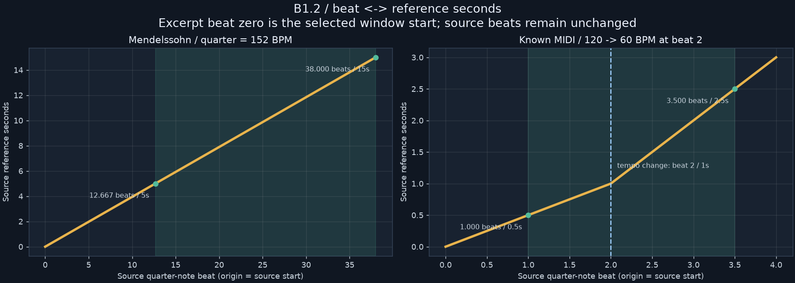

R/R RIBBON ROOM실험 기록 · 이전 결과를 보존한 검토 화면입니다. 새 그래픽 작업은 작업실에서 이어갑니다.
다른 실험 보기
B1.2 · TIME COORDINATES
악보의 박과 초를 함께 보기
원본 시작은 0박·0초입니다. 발췌를 자르면 화면의 시작은 다시 0이 되고, 원본 위치는 별도로 보존합니다.
여기서 1박은 4분음표 길이입니다. 마디 번호나 실제 녹음의 발음 시점을 뜻하지 않습니다.

음을 잘라도 원본 위치를 보존합니다
Violin I의 첫 표시 음: 원본 12.500박·4.934초 / 발췌 0.000박·0.000초.
템포 변화 예제에서는 원본 0.5박부터 3박까지인 음이 0.25초부터 2초까지 이어집니다. 발췌 0.5–2.5초 안에서는 0초부터 1.5초, 박 길이는 2박입니다. 초와 박의 비율은 템포 변화에 따라 달라집니다.
새 데이터 형식 0.2.0은 선택해서 생성합니다. 기존 라이브러리와 0.1.0 결과는 보존했습니다. 이번 화면은 악보 기준 시간의 검토이며, 실제 녹음 정렬은 별도 단계입니다.
전체 악보 0.2.0 · 5–15초 발췌 JSON · MIDI 예제 JSON · 검증 기록
멘델스존 원본: OpenScore String Quartets · CC0-1.0. MIDI 예제는 이 검사를 위해 생성한 원본 테스트 데이터입니다.